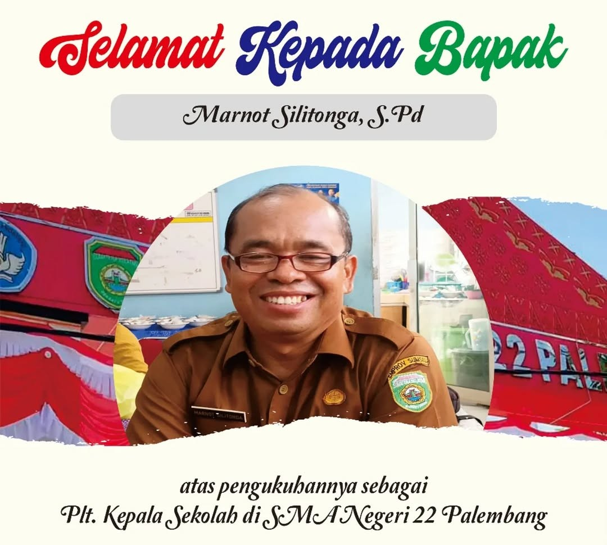

PLT. Kepala Sekolah Sman 22 Palembang
Assalamu’alaikum warahmatullahi wabarakatuh,Salam sejahtera untuk kita semua.
Dengan penuh rasa bangga dan syukur, saya menyampaikan salam hangat kepada seluruh warga sekolah yang luar biasa ini. Sekolah kita bukan hanya tempat menimba ilmu, tapi juga rumah kedua yang penuh semangat, kebersamaan, dan prestasi. Saya merasa terhormat bisa menjadi bagian dari keluarga besar yang terus tumbuh dan berinovasi demi masa depan yang lebih cerah.
Identitas Sekolah
NPSN : 10647682
Status : Negeri
Bentuk Pendidikan : SMA
Status Kepemilikan : Pemerintah Daerah
Tanggal SK Pendirian : 2010-10-14
- Mengadopsi Kurikulum Merdeka
- Menumbuhkembangkan Profil Pelajar Pancasila
- Memberi Ruang bagi Potensi dan Minat Peserta Didik
Mars Sman 22 Palembang
Mari kita satukan hati dan semangat, dengarkan dengan bangga
Mars SMAN 22 Palembang, lagu kebanggaan yang telah mengiringi sejak awal berdirinya sekolah tercinta! 🎶✨
Nyiur berlabuh ilalang membentang, SMA 22 tegaklah sudah
Wujudkan cita-cita tinggi menjulang, Wiyata mandala bertahta megah
Belajar, bekerja, berlatih, Nuju warsa eka dwi warsa
Mengasah, mengolah, meraih, Masa depan Palembang Jaya
Menggema, mengalun kalam suci, Pembuka hati penyejuk jiwa
Berbagai ilmu telah menanti, Tuntunan hidup alam semesta
Belajar, bekerja, berlatih, Nuju warsa eka dwi warsa
Mengasah, mengolah, meraih, Masa depan Palembang Jaya
Jumlah Guru
Pegawai
Pendidik dan Tendik
Perserta Didik
Fasilitas Sekolah
Fasilitas
Ruang kelas
Terdapat 41 ruang kelas yang nyaman dan kondusif untuk kegiatan belajar mengajar..
Perpustakaan
Fasilitas untuk meminjam dan membaca buku, mendukung literasi siswa dengan koleksi yang beragam.
Laboratorium Multimedia
Laboratorium Multimedia tempat praktik komputer dan teknologi,khusus mata pelajaran informatika.
Laboratorium Kimia
Laboratorium yang dilengkapi peralatan untuk kegiatan praktikum mata pelajaran Kimia.
Laboratorium Bahasa
Laboratorium berbasis komputer untuk menunjang pembelajaran bahasa, seperti menyusun CV, latihan listening, dan percakapan.
Laboratorium Biologi
Laboratorium yang digunakan untuk kegiatan praktikum Biologi, seperti pengamatan sel, anatomi tumbuhan dan hewan, serta eksperimen ilmiah lainnya.
Laboratorium Fisika
Laboratorium untuk praktik dan eksperimen fisika, membantu siswa memahami konsep melalui percobaan langsung.
Unit Kesehatan Sekolah
Ruang pelayanan kesehatan di sekolah yang berfungsi sebagai tempat pertolongan pertama, pemeriksaan kesehatan ringan, dan pembinaan hidup sehat bagi siswa.
Kantin
Tempat makan dan istirahat siswa, menyediakan berbagai pilihan makanan dan minuman.
Lapangan
Area terbuka untuk kegiatan olahraga, upacara, dan kegiatan ekstrakurikuler lainnya.
Ekstrakurikuler
SMAN 22 Palembang menyediakan beragam kegiatan ekstrakurikuler seperti PMR, Paskibra, OSIS, MPK, IBG, Bola Voli, English Club, Musik, Rohis, Pramuka, Gliters, Bola Basket, dan lainnya sebagai wadah pengembangan minat, bakat, serta karakter siswa.
Dokumentasi kegiatan sekolah
Top 6 Foto Tahun 2025
Berita
Selamat kepada Bapak/Ibu Guru dan Tenaga Administrasi atas pelantikan sebagai PPPK di lingkungan Provinsi Sumatera Selatan.
Berita
Pelaksanaan Senam Maumere pada acara Experions 2025
Berita
Selamat Tahun Baru 2025 Foto Akena Angkatan 25
Berita
Proses Penerapan Projek Profil Pelajar Pancasila Tema kearifan Lokal
Berita
Petugas Upacara Senin 29 juli 2024 oleh Kelas 12.13
Berita
Petugas Upacara Senin 27 Mei 2024 oleh kelas 12.13